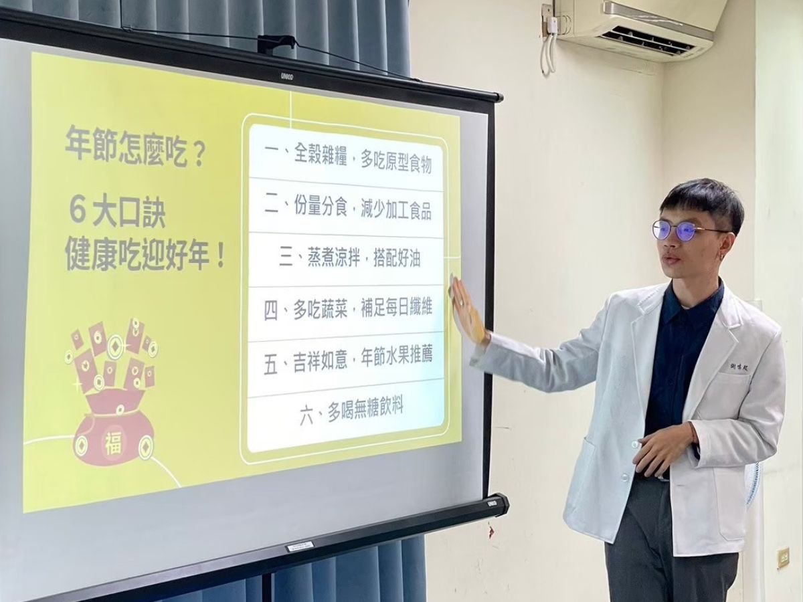
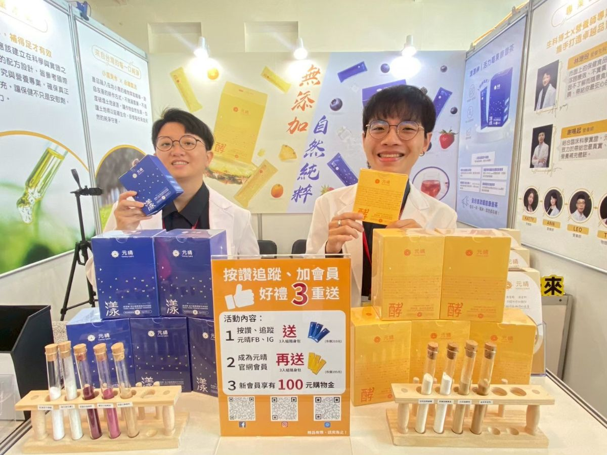
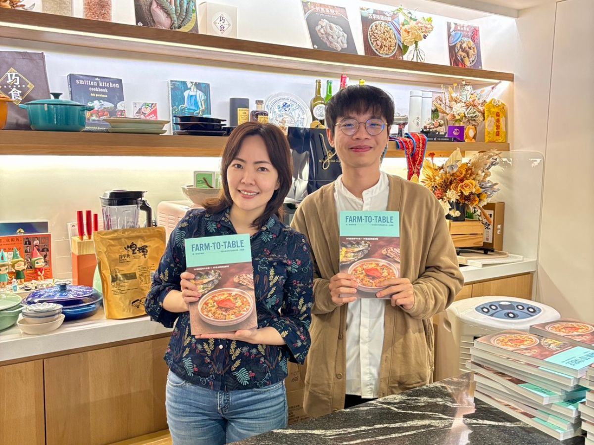
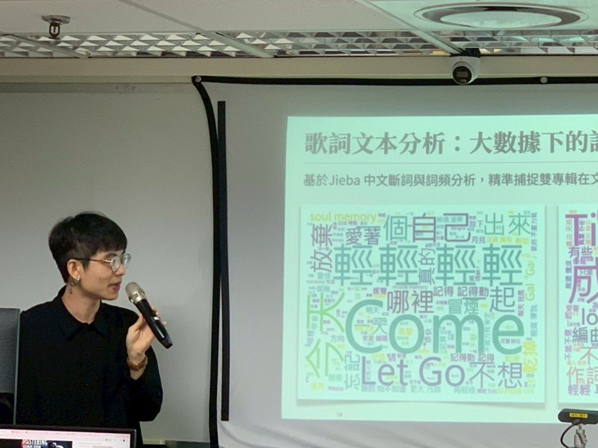
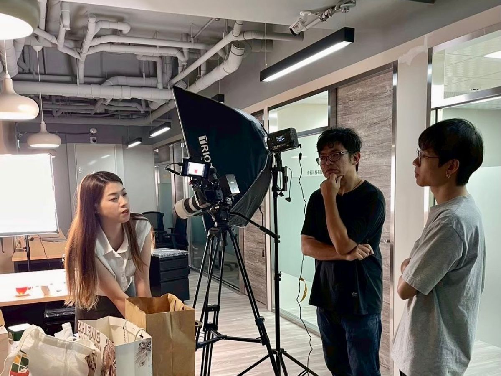
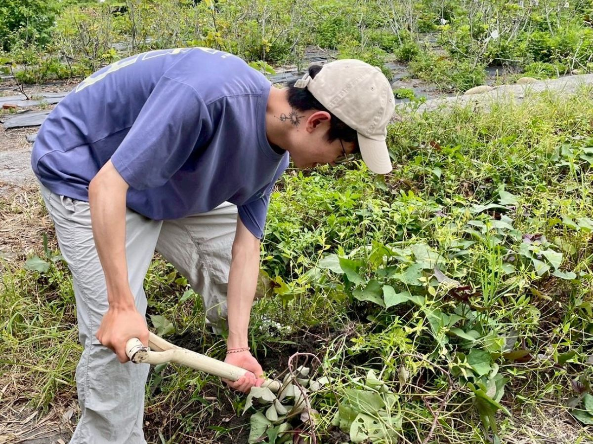

01 / 團體演講
機構中心教育推廣
#課程結構設計
#口語表達互動
#文案企劃實力
拋開生硬的理論、換上你日常會發生的故事，當聽眾認同、開始點頭微笑，是最好不過的回饋！

02 / 策展規劃
2025 高雄食品展覽會
#產覽行銷活動
#空間動線設計
#觀展效益評估
第一次帶自己的產品參加展覽，從無到有一步步跨領域溝通、規劃，累積社群粉絲+180%。

03 / 商業合作
巧食丨異業合作洽談
#商業模式分析
#企劃提案技巧
#商務人脈托展
透過不斷洽詢異業合作，讓產品服務觸及不領域受眾，發揮品牌最大價值。

04 / 資訊專業
工研院受訓數據分析報告
#程式語言基礎
#大數據清洗整理
#銷售市場洞察
結合Vibe Coding與AI大數據，用理性數據指標，拆解感性的音樂專輯詞頻與曲風變化。

05 / 團隊協作
商品攝影及腳本規劃
#視覺風格定調
#分鏡腳本規劃
#社群平台配置
扮演產品、行銷與攝影間的溝通橋樑，良好的協作溝通，能凝聚團隊把專案做到極致。

06 / 個人特質
保持好奇體驗生活
#生理數據追蹤
#持續學習
#生活美學
工作之外的時間，喜歡於探索新事物，保持對事物的好奇心，是我持續成長的動力！